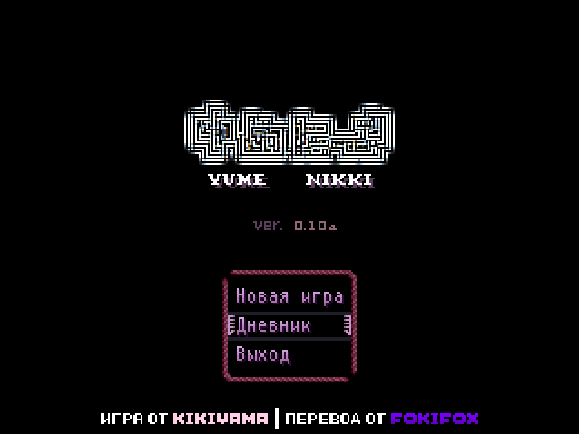
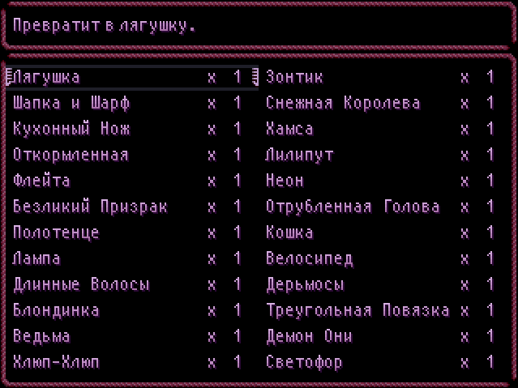

|


Русификация
|

СкачатьСсылкиYume Nikki (яп. 夢日記、ゆめにっき) ― 32-битная бесплатная игра-квест, созданная с помощью программы RPG Maker 2003 человеком (или группой людей), известным как Kikiyama. |
